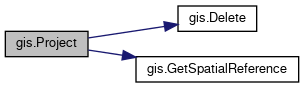
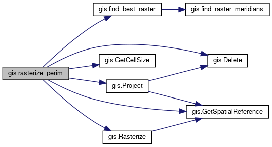
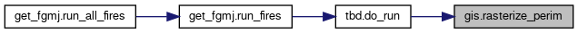

Classes | |
| class | Extent |
Functions | |
| def | GetFeatureCount (shp) |
| Count number of features in a shapefile. More... | |
| def | FromEPSG (epsg) |
| Load spatial reference from epsg value. More... | |
| def | Delete (shp) |
| Delete the given shapefile. More... | |
| def | GetSpatialReference (src) |
| Determine spatial reference from a source file. More... | |
| def | Project (src, outputShapefile, outSpatialRef) |
| Project to given spatial reference. More... | |
| def | GetCellSize (raster) |
| Determine cell size for a raster and ensure pixels are square. More... | |
| def | Rasterize (shp, raster, reference) |
| Convert a shapefile into a raster with the given spatial reference. More... | |
| def | save_point_shp (latitude, longitude, out_dir, name) |
| Save a shapefile with a single point having the given coordinates. More... | |
| def | sum_raster (raster, band_number=1) |
| Sum the value of all cells in a raster. More... | |
| def | find_raster_meridians (year) |
| Find the meridians of input rasters for the given year. More... | |
| def | find_best_raster (lon, year) |
| Find the raster with the closest meridian. More... | |
| def | rasterize_perim (run_output, perim, year, name, raster=None) |
| Convert a perimeter to a raster. More... | |
| def | project_raster (filename, output_raster=None, outputBounds=None, options=['COMPRESS=LZW', 'TILED=YES']) |
Variables | |
| string | RASTER_DIR = "/appl/100m" |
| MERIDIANS = None | |
| Dictionary of meridians to the rasters they are for. More... | |
Detailed Description
Non-ArcGIS GIS utility code
Function Documentation
◆ Delete()
| def gis.Delete | ( | shp | ) |
◆ find_best_raster()
| def gis.find_best_raster | ( | lon, | |
| year | |||
| ) |
Find the raster with the closest meridian.
- Parameters
-
lon Longitude to look for closest raster for year Year to find raster for
- Returns
- Raster with the closest meridian to the desired longitude
Definition at line 285 of file gis.py.
Here is the call graph for this function:

Here is the caller graph for this function:

◆ find_raster_meridians()
| def gis.find_raster_meridians | ( | year | ) |

◆ FromEPSG()
| def gis.FromEPSG | ( | epsg | ) |
◆ GetCellSize()
| def gis.GetCellSize | ( | raster | ) |

◆ GetFeatureCount()
| def gis.GetFeatureCount | ( | shp | ) |
◆ GetSpatialReference()
| def gis.GetSpatialReference | ( | src | ) |
◆ Project()
| def gis.Project | ( | src, | |
| outputShapefile, | |||
| outSpatialRef | |||
| ) |
Project to given spatial reference.
- Parameters
-
src File to project outputShapefile Destination file to save projection to outSpatialRef Spatial reference to project into
- Returns
- None
Definition at line 67 of file gis.py.
Here is the call graph for this function:

Here is the caller graph for this function:

◆ project_raster()
| def gis.project_raster | ( | filename, | |
output_raster = None, |
|||
outputBounds = None, |
|||
options = ['COMPRESS=LZW', 'TILED=YES'] |
|||
| ) |
◆ Rasterize()
| def gis.Rasterize | ( | shp, | |
| raster, | |||
| reference | |||
| ) |
Convert a shapefile into a raster with the given spatial reference.
- Parameters
-
shp Shapefile to convert to raster raster Raster file path to save result to reference Reference raster to use for extents and alignment
- Returns
- None
Definition at line 170 of file gis.py.
Here is the call graph for this function:

Here is the caller graph for this function:

◆ rasterize_perim()
| def gis.rasterize_perim | ( | run_output, | |
| perim, | |||
| year, | |||
| name, | |||
raster = None |
|||
| ) |
Convert a perimeter to a raster.
- Parameters
-
run_output Folder to save perimeter to perim Perimeter to convert to raster year Year to find reference raster for projection name Name of fire to use for file name raster Specific name of file name to output to
- Returns
- Perimeter that was rasterized
- Path to raster output
Definition at line 300 of file gis.py.
Here is the call graph for this function:

Here is the caller graph for this function:

◆ save_point_shp()
| def gis.save_point_shp | ( | latitude, | |
| longitude, | |||
| out_dir, | |||
| name | |||
| ) |
◆ sum_raster()
| def gis.sum_raster | ( | raster, | |
band_number = 1 |
|||
| ) |
Variable Documentation
◆ MERIDIANS
| gis.MERIDIANS = None |